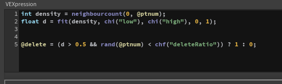
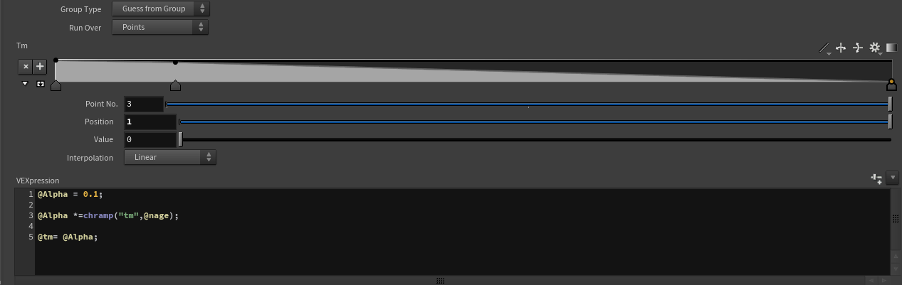

第 8 週
團隊成員
Yiqi Zheng（特效）
Riley Ho（特效）
Itim Kongsakulvatanasook（特效）
Sofia Mancias（合成）
2 月 29 日
Benji Hopkins（外觀開發）
SCAD × HARBOR × ETC － 第 8 週
大家好，這是我 SCAD × Harbor × ETC 部落格的第八週！
以下是週二簡報後導師們的回饋。
Kyle：
-
鏡頭 1：紅色看起來不錯，地面或許可以更多彩一點，目前上半部太搶眼
-
鏡頭 2：左側光線太亮，要和右側一致
-
加強雷射的音效
-
鏡頭 3 的遮罩羽化效果不理想，要怎麼把羽化藏起來？
-
鏡頭 3 的燈光或許可以更有氛圍
-
也許根本不需要最後那幅畫，粒子看起來更酷
-
讓鏡頭 4 的粒子更平滑
-
確保鏡頭 4 的背景和其他鏡頭一致
Beck：
-
也許可以轉移顏色，而不是換不同的材質？
-
粒子和遮罩看起來脫節
-
粒子和遮罩的顏色也不一樣
-
收尾鏡頭非常亮
-
鏡頭 4 的粒子看起來沒有陰影
-
鏡頭 4 看起來像翻頁動畫
-
粒子要有更多變化
-
木紋貼圖解析度要提高，看起來比印表機本身品質差
-
想想木件上木紋的方向
-
木頭的倒角邊緣需要更多凹凸
Hailey：
-
鏡頭 4 需要一點顏色
-
也許可以把小畫作放在印表機旁邊，增添一點色彩亮點
-
或讓顏色來自收尾時細微的粒子
Molly：
-
鏡頭 1，粒子的管狀造型還在調整嗎？
-
部分物件需要細微的倒角，尤其是木頭
-
鏡頭 3 在粒子出現前顯得死氣沉沉
-
鏡頭 3 開頭或許可以再加一盞燈
-
鏡頭 4 用三點打光，而不是只有一盞大燈，或許加入一點像其他鏡頭那樣細微的顏色
-
灰色但帶一點藍，顏色不要太多
Drew：
-
鏡頭 1，粒子需要動態模糊，尤其是白色粒子
Billy：


待辦事項：
-
調整粒子的路徑與流動形狀（加入 noise）
-
為鏡頭 1 降噪
-
避免過曝。
這是我們第 8 週的預視（Previs）。
我在粒子流周圍測試了幾層額外的粒子，但視覺效果不理想，所以我們決定拿掉。
Claude 也協助我調整設定的幾個部分，減少粒子看起來像細線的問題。我發現這種線狀效果是因為某些區域粒子密度太高，讓它們在視覺上融在一起。

這段程式用以位置為基礎的 noise 產生平滑遮罩，再套用到 Alpha，讓透明度逐漸變化，形成自然的溶解效果。

這段程式檢查每個點周圍有多少相鄰粒子，把密度重新映射到 0–1 範圍，並在密集區域隨機刪除點，減少聚集，讓粒子分佈看起來更自然。

這段程式先設定基礎 alpha 值，再用以粒子年齡（@nage）驅動的 ramp 控制隨時間變化的透明度，讓粒子隨年齡漸漸淡出。最後把 alpha 值存進 @Tm，方便視覺化或進一步控制。